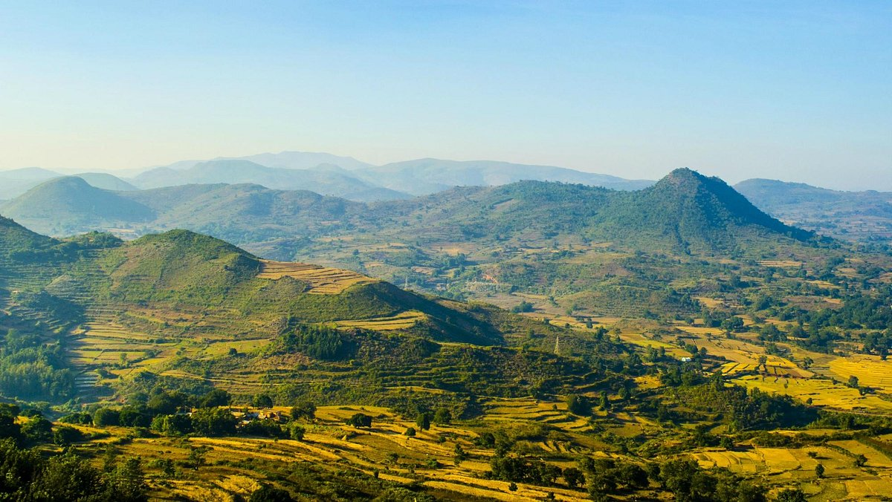

Araku Valley is a peaceful hill station known for its coffee plantations, waterfalls, and tribal culture. It’s a favorite weekend getaway for nature lovers and photographers, especially during the monsoon season.

Figure 3: The green landscapes of Araku Valley.